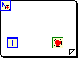
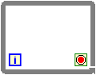

The conditional terminal, or , of this For Loop or While Loop is not wired to anything and must be wired to a Boolean data source, such as a button or the result of a comparison.
 You must wire a Boolean value to the conditional terminal to control if the loop stops or continues.
To correct this error, right-click the conditional terminal on the block diagram and select Create Control from the shortcut menu to create a front panel Boolean control. Wire the Boolean control terminal to the conditional terminal. You also can wire the output from a function from the Comparisons palette, or any other function with an output that has a Boolean data type.